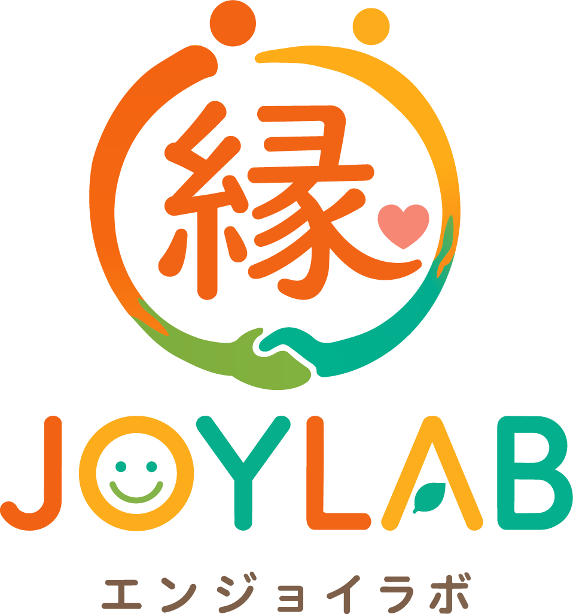
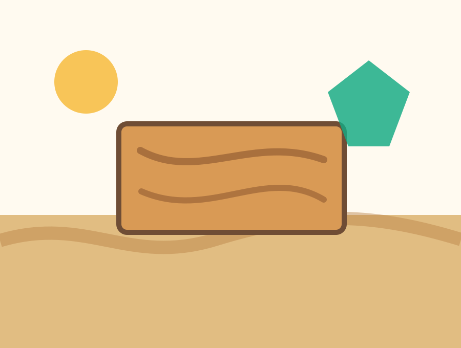
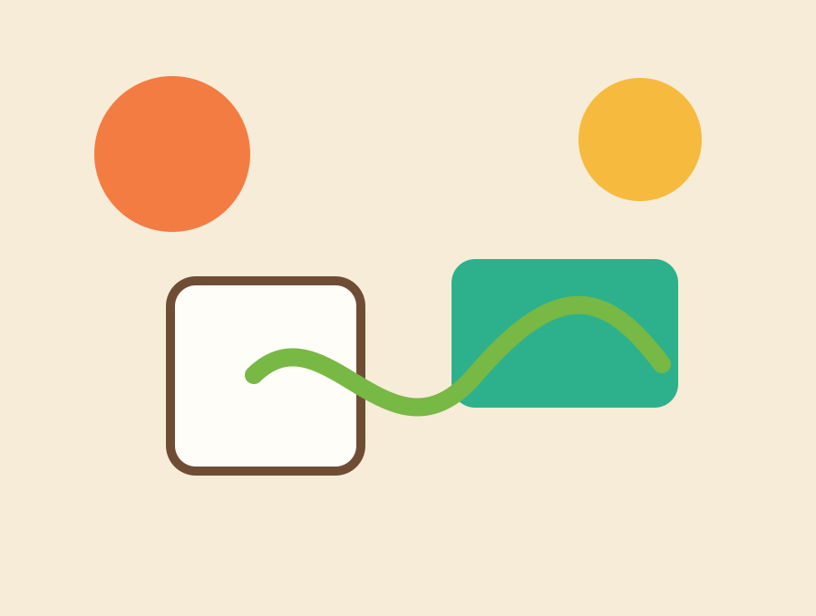
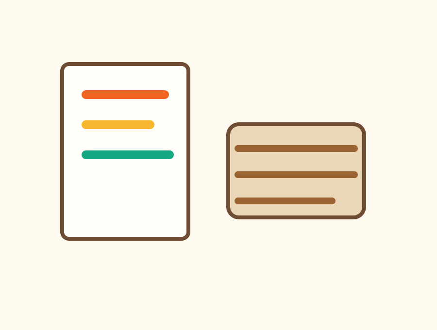
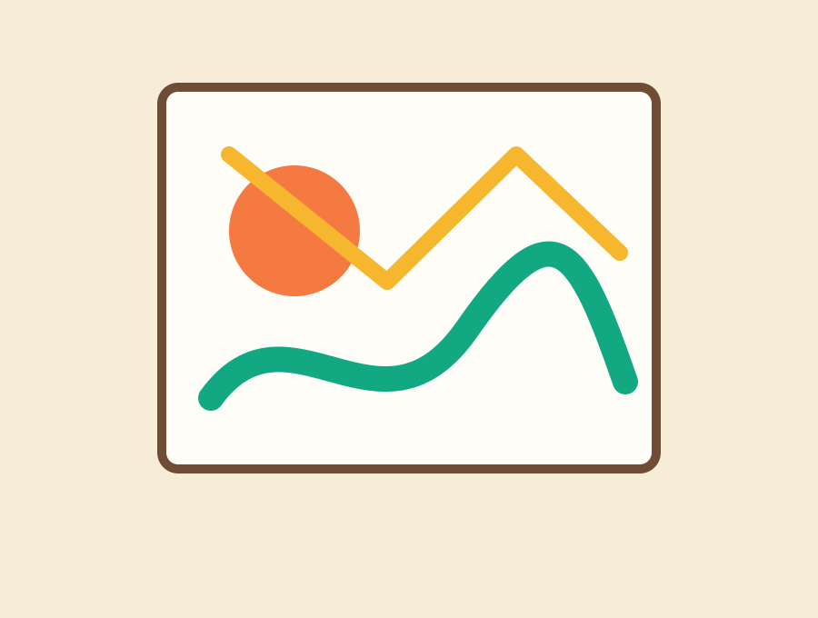
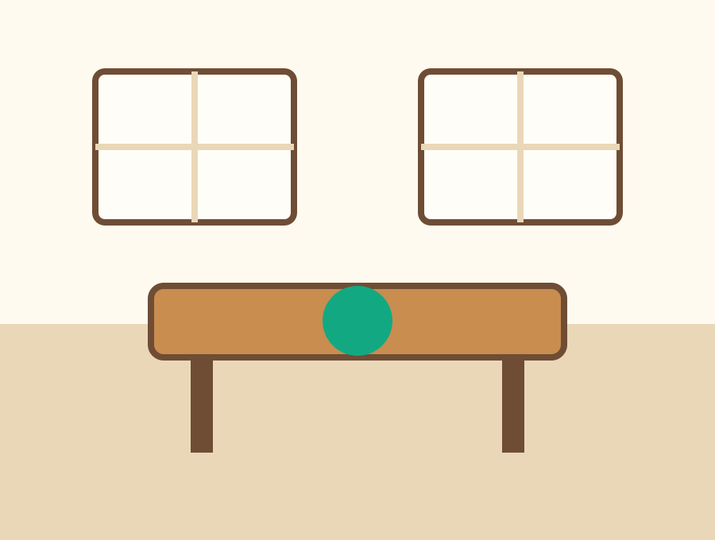
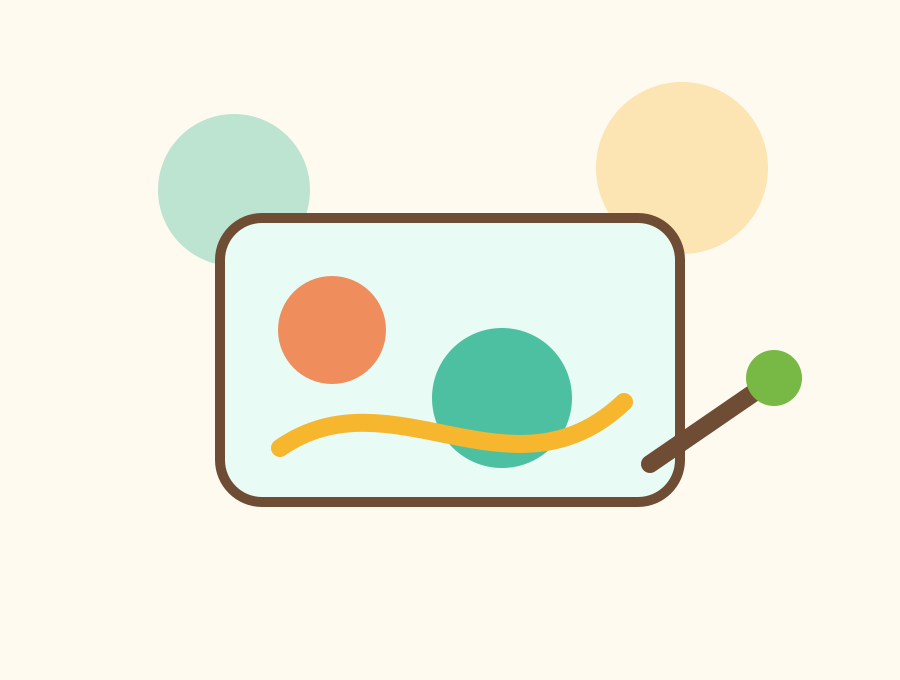

ペースを大切に
作業量や時間の過ごし方は、体調や得意なことに合わせて相談しながら進めます。
就労継続支援B型事業所
縁JOYLAB エンジョイラボ は、木製工芸を中心に、クラフト雑貨づくりやアート制作などに取り組む指定就労継続支援B型事業所です。
About
縁JOYLABは、知的障がい・精神障がいのある方を対象に、ものづくりを通じた日中活動と就労の機会を提供する場所です。
作業の成果だけでなく、来所できたこと、手を動かせたこと、誰かと確認しながら進められたことを大切にします。温かい雰囲気の中で、一人ひとりの体調やペースに合わせて取り組める環境を整えていきます。

Vision
つながる・えがお・みらいへFeatures
作業量や時間の過ごし方は、体調や得意なことに合わせて相談しながら進めます。
木の質感や色、形に触れながら、ものづくりの達成感を感じられる作業を用意します。
ご家族、支援者、行政関係者、協力会社の方にも説明しやすい運営を心がけます。
Work
木製工芸をメインに、クラフトやアート、受託作業まで、段階に合わせて取り組める内容を想定しています。

Main work
木材の風合いを生かし、磨く、組み立てる、仕上げるなどの工程を通して、手作業の集中と達成感につながる作業です。



Target
知的障がい・精神障がいのある方で、就労継続支援B型の利用を検討されている方を対象としています。
利用にあたっては、お住まいの自治体や相談支援専門員、関係機関と確認しながら手続きを進めます。
Daily Flow
一人ひとりの体調や状況を確認しながら、以下の流れで作業に取り組みます。
| 時間 | 内容 | 過ごし方 |
|---|---|---|
| 朝礼・準備 | 体調や作業内容を確認し、落ち着いて始めます。 | |
| 作業 | 木製工芸やクラフトなど、それぞれの作業に取り組みます。 | |
| 休憩 | 無理なく続けられるよう、短い休憩を取ります。 | |
| 作業 | 午前の作業を再開し、できる範囲で進めます。 | |
| お昼休み | 昼食と休憩の時間です。 | |
| 作業 | 午後の作業に取り組みます。 | |
| 休憩 | 集中を整えるための休憩を取ります。 | |
| 作業 | 仕上げや確認をしながら作業します。 | |
| 片付け・終礼 | 作業場所を整え、1日の振り返りを行います。 |
Wage
工賃については、作業内容や利用状況に応じて設定予定です。詳細は決まり次第、順次ご案内いたします。
Start
まずは電話で状況や見学希望をお聞かせください。
事業所の雰囲気や作業内容をご確認いただきます。
無理のない範囲で作業を体験し、相性を確認します。
関係機関と確認しながら必要な手続きを進めます。
利用計画に沿って、少しずつ活動を始めます。
Photos
現時点では仮素材を掲載しています。開所後の実写真に差し替えやすい構成です。


Access